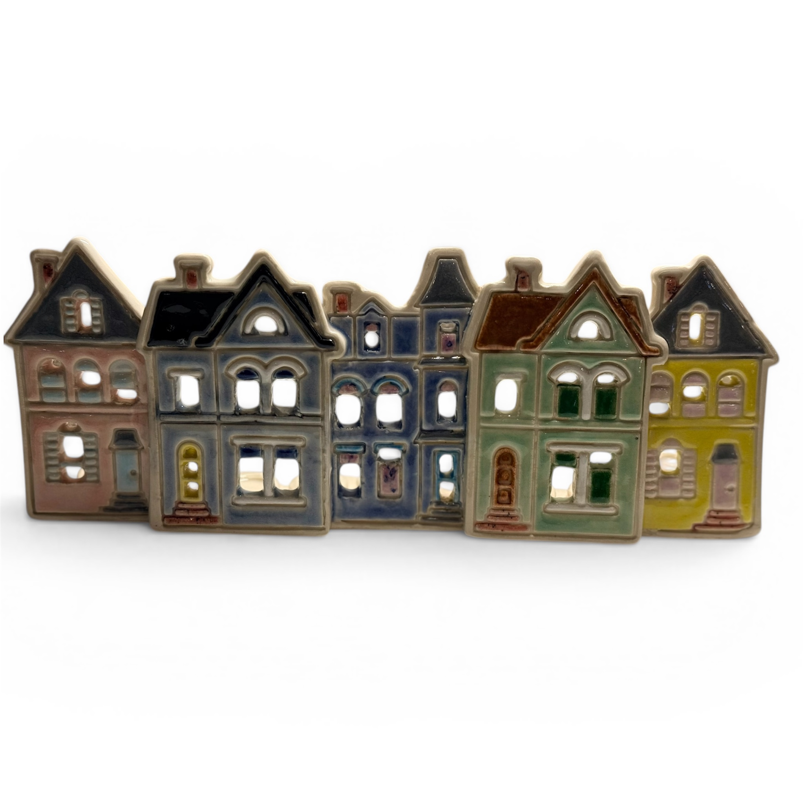
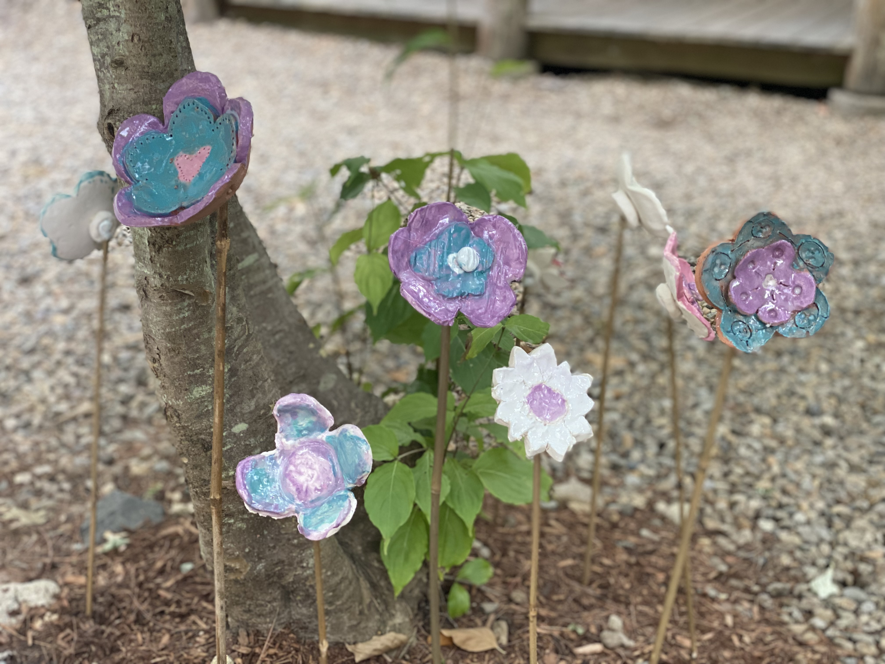
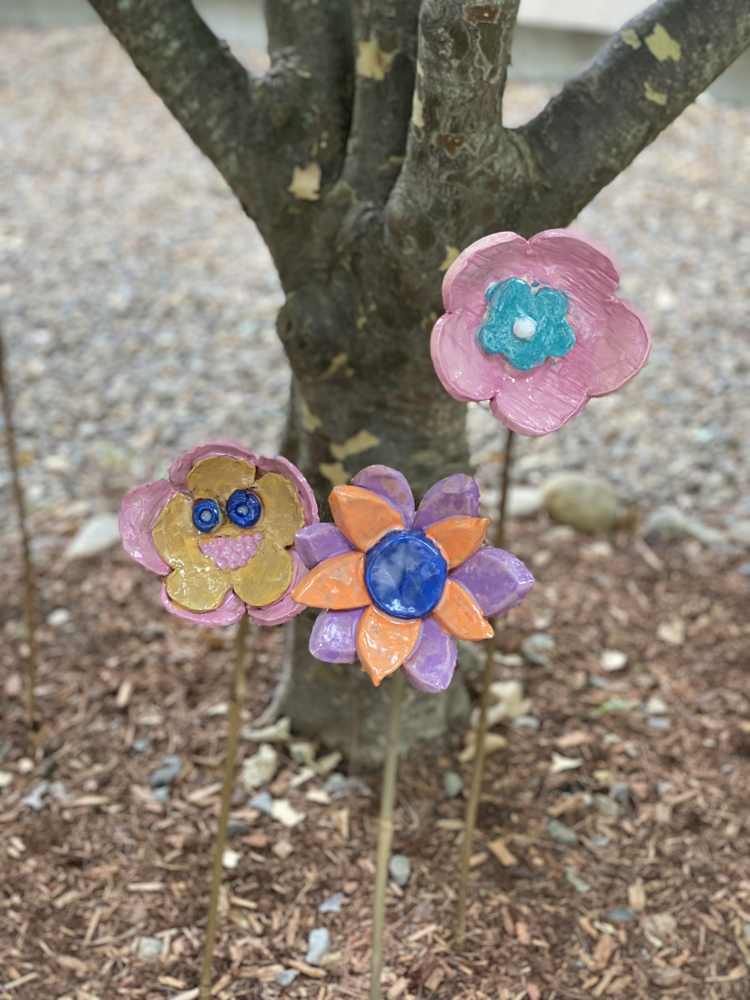

About Rachel
Potter, creator of Judaic art, and community builder — making things with clay and intention.
Clay as a constant presence
Pottery is more than a practice for me — it's a constant presence in my mind. Whether I'm dreaming up new glaze combinations, sketching ideas for forms I haven't yet made, or imagining the hands that will one day wrap around a finished mug, clay has shaped the way I see the world.
My journey began in a hand-building class in the summer of 2017, and I was immediately captivated. By that fall, I had moved to the wheel, drawn in by the meditative rhythm of throwing and the endless possibilities it offers. What started as a class became a calling. After years of dedicated study and practice at a community studio, I established Blue Lou Studios — my own creative home where I can fully immerse myself in the work.
"What started as a class became a calling."

Rooted in community & Jewish identity
My individual pieces are rooted in community: mugs, bowls, plates, and vessels designed to bring joy to every day gatherings. I believe that handmade ceramics transform ordinary moments — a morning cup of coffee, a shared meal — into something more intentional and more beautiful. I pour careful attention into surface texture, glaze layering, and form, always searching for that balance between utility and artistry.
A deeply meaningful thread running through much of my work is the creation of Judaic art. Designing pieces that enhance Jewish identity and practice — a Shabbat candlestick holder, a seder plate, a mezuzah — connects my craft to something larger than the object itself. Judaism is rich with ritual, and handmade ceramics have a unique power to make those rituals feel personal, rooted, and alive. It matters to me that a Jewish home is filled with objects made with intention and love.
Group Projects
Leading group projects, where the whole is greater than the sum of the parts, allows me to bring my vision of community into reality. My more artistic pieces are meant for conversation and relationship building.
I love working with synagogues, schools, camps, and other communities on collaborative ceramic projects — from group garden stake workshops to large-scale installations. If you have a vision, I'd love to help bring it to life.
Reach Out to Start a Conversation

Who is Blue Lou?
Blue Lou Studios is named for a beloved stuffed aqua bunny — and the whole family of Blue Lous that came after. It's a story worth knowing.
Read the Blue Lou Story →Handmade with Care
Every piece is touched by human hands — from the wheel to the kiln to your door.
Made to Last
We build things to be used, kept, and handed down — not replaced.
Community First
This is a family studio — and a community one. The stories, the shared projects, all of it.